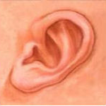
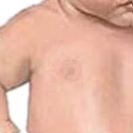
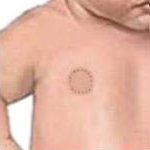
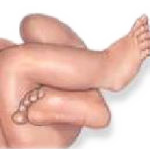
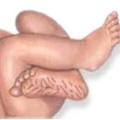

Textura da pele
Pele fina e gelatinosa
Pele fina e lisa
Pele lisa, com discreta descamação superficial
Pele pouco mais grossa, sulcos superficiais e descamação de mãos e pés
Pele grossa e apergaminhada
Forma de orelha
Pavilhão auricular disforme e achatado
Bordo do pavilhão parcialmente encurvado
Encurvamento parcial de todo o pavilhão superior

Encurvamento bem definido de todo o pavilhão auricular
Glândula mamária
Não palpável
Palpável, < 5 mm
Palpável, entre 5 mm e 10 mm
Palpável, > 10 mm
Mamilos
Mamilo visível, sem areóla

Mamilo bem definido, com areóla < 0,75 cm

Areóla visível, não elevada, > 0,75 cm
Areóla elevada, > 0,75 cm
Pregas plantares

Pregas ausentes
Marcas vermelhas mal definidas na metade anterior da planta
Marcas vermelhas bem definidas na metade anterior da planta e sulcos no terço anterior das plantas
Sulcos na metade anterior das plantas

Sulcos profundos, além da metade anterior das plantas
Escore:
ou
 Encurvamento parcial de todo o pavilhão superior
Encurvamento parcial de todo o pavilhão superior
Encurvamento parcial de todo o pavilhão superior
Encurvamento parcial de todo o pavilhão superior